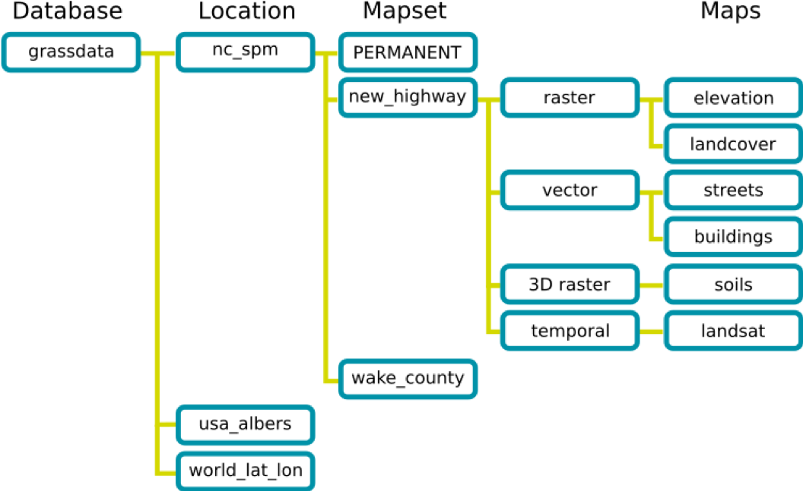

GRASS GIS Python library
The Geographic Resource Analysis Support System (GRASS) is a free and open source geographic information system (GIS). It is a powerful tool for managing, analyzing, and visualizing geospatial data, supporting raster, vector, and 3D modeling functionalities.
Key Features
- This cross platform GIS runs on Windows, Mac, and Linux.
- Support for large datasets and high-resolution analysis
- Extensive scripting and automation capabilities
- Integration with other GIS tools and libraries like QGIS, GDAL, and R
Install GRASS GIS
Download the latest stable release from the official site:
https://grass.osgeo.org/download/
Choose the installer based on your operating system:
- Standalone installer for Windows
- .dmg or Homebrew package for MacOS
- apt, dnf, or snap installation for Linux
Starting GRASS GIS
When GRASS GIS launches, you must select a:
- GISDBASE (root project directory)
- Location (defines projection and extent)
- Mapset (stores individual data and settings)
📘 Read the GRASS Quickstart Guide to understand this setup better.
GRASS GIS Startup Screen

GRASS GIS Database Structure

| Component | Description |
|---|---|
GISDBASE |
Root folder where all GRASS GIS data is stored. |
LOCATION |
Folder inside GISDBASE that defines a projection/CRS. All data in a LOCATION shares the same CRS. |
MAPSET |
Subdirectory of a LOCATION for storing actual data and managing workflows. |
PERMANENT |
Special mapset holding region settings and the default CRS. |
WIND |
File in each MAPSET that holds region resolution/extent. |
Common GRASS GIS Commands
Here are some frequently used GRASS GIS commands useful for working with rasters, vectors, regions, and exporting data.
Starting and Managing Sessions
# Create a new location from scratch
grass -c /mnt/mapdata/grassdata/new_location
# Start GRASS in an existing location/mapset
grass /path/to/mapset/location
# Create a new mapset inside an existing location
g.mapset -c mapset=test location=ipa_india
# Switch to a different mapset
g.mapset mapset=pcp_mean_monthly
# Add multiple mapsets to current search path
g.mapsets mapset=nrsc_lulc,ind_annual_data operation=add
Map and Region Management
# Check raster resolution and extent
r.info -g pcpm_imd_2023_10
# List all rasters and vectors
g.list type=raster,vector
# List all rasters and export to file
g.list rast map=etg_etb_ind_monthly >> names.txt
# Set region to match a raster or vector map
g.region raster=your_raster_map
g.region vector=your_vector_map
# View current region settings
g.region -p
Import Data
# Import a raster file (GeoTIFF, NetCDF, etc.)
r.import input=chirps_pcp.tif output=chirps_pcp
# Import a vector file (GeoJSON, Shapefile, etc.)
v.import input=IndiaBoundary.geojson output=india_boundary
Raster & Vector Info
# View metadata of a raster or vector
r.info map=chirps_pcp
v.info map=india_boundary
Raster Operations
# Map algebra
r.mapcalc expression="output_map = raster1 + raster2"
# Zonal statistics
r.univar map=raster_map zones=vector_zones_map
# Raster statistics summary
r.stats -a input=raster_map_name
# Merge rasters
r.patch input=map1,map2 output=merged_map
# Clip raster with current region
r.clip input=your_raster output=clipped_raster
# Resample raster
r.resample input=your_raster output=resampled_raster
# Apply raster mask
r.mask raster=mask_map
# Export raster to GeoTIFF
r.out.gdal input=raster_map output=/path/output.tif format=GTiff
Vector Operations
# Buffer vector geometry
v.buffer input=your_vector output=buffered_vector distance=500
# Convert vector to raster
v.to.rast input=your_vector output=rasterized_vector use=cat
# Convert raster to vector
r.to.vect input=your_raster output=vector_map feature=area
# Merge vectors
v.patch input=vector1,vector2 output=merged_vector
# Export vector to Shapefile
v.out.ogr input=vector_map output=/path/output.shp format=ESRI_Shapefile
Tip: Always verify the region and CRS settings (
g.region -p) before running any spatial operation.